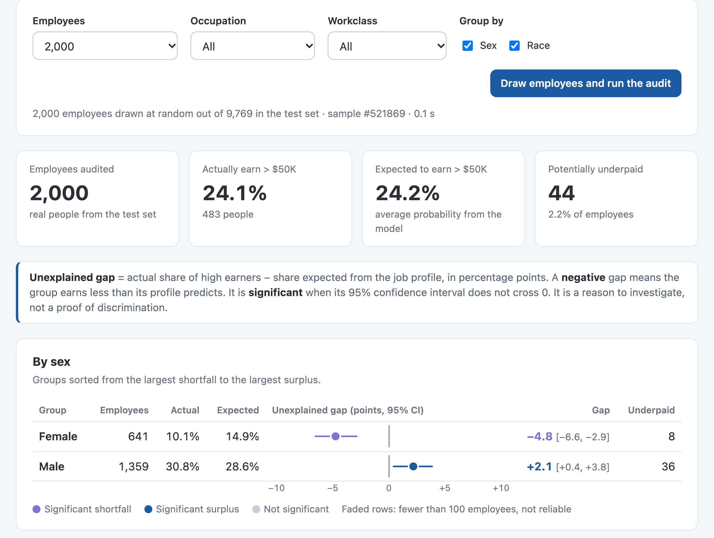

Lélia Hervy · Thomas Pasquier--Guillard · Robin Cacarié
Supervised Learning & Model Engineering · Ilana Sebag · Albert School · October 2026
01 / 10
Problem
Model
Audit
Our role: a pay-equity regulator
Business question: which employers should we investigate, and on what evidence?
All workers
Share earning more than $50K
Men30%Women11%
Same degree: Bachelors
Share earning more than $50K
Men50%Women21%
Same job: managers
Share earning more than $50K
Men57%Women24%
So what? The gap does not disappear when we compare people with the same degree or the same job. Raw gaps are not enough: under “equal pay for equal work”, we must compare each person with what their job-related profile predicts.
Adult census data, full dataset (48,842 people). Men: light blue · Women: navy.02 / 10
Problem
Model
Audit
What the model may use
Used · job-related factors
Age
Education (years)
Occupation
Hours per week
Workclass
Investment income
Excluded · protected or proxies
Sex
Race
Native country
Relationship
Marital status
“Husband” = 99.99% men: relationship encodes sex.
Added · 5 new features
Works overtime (> 40 h): 39.7% earn > $50K vs 17.2%. 36% of men work overtime vs 17% of women.
Part-time (less than 35 h a week): 7.2% earn over $50K, against 27.4%. 27.6% of women work part-time, against 11.9% of men.
Has investments (any capital gain or loss): 57.5% earn over $50K, against 18.9%. The other two features, net capital (gain − loss) and log capital gain, describe the same income.
So what? The exclusions happen inside the pipeline, so sex and race can never reach the model, even in production. Part-time work is a legitimate reason to earn less, and the model now accounts for it.
Also dropped: fnlwgt (census sampling weight) and education (exact duplicate of education years).03 / 10
For each group: actual rate − expected rate = unexplained gap
1 · No protected attributesotherwise the model learns the discrimination and hides it
2 · Good rankingthe expected rate must follow real differences in qualifications
3 · Calibrated probabilitiesthe expected rate is an average of probabilities, so they must be right
A negative gap means the group earns less than its qualifications predict: a reason to investigate, not a verdict.04 / 10
Problem
Model
Audit
Three models, one winner
Average precision on the validation set, after tuning (main metric: focuses on the rare > $50K class; random = 0.24)
Logistic Regression
0.692
Simple and transparent, but one linear score misses interactions.
Random Forest
0.752
Biggest jump: the value of a degree depends on the job and on age.
LightGBM · selected
0.776
Best ranking and recall, trains in about 1 second.
Imbalance: class weights
Same gain as undersampling or SMOTE, but keeps every real person and creates no synthetic ones.
Tuning: Optuna + 5-fold CV
Only +0.005 AP: the choice of model family mattered far more than its settings.
One scikit-learn Pipeline: drop excluded columns, add 5 features, impute, scale, one-hot, model · every run logged in MLflow05 / 10
Problem
Model
Audit
What drives the predictions
Mean |SHAP value|: average impact on a prediction
Age1.09Education (years)0.47Capital gain0.29Hours per week0.20Service occupation0.18
One prediction explained
Age 50, professional degree, self-employed. Predicted 91% chance of earning more than $50K, but earns less.
It looks like underpayment, yet there is no employer to blame.
→ Flags are leads for inspectors, not verdicts.
So what? The model prices a profile the way a pay grid would: experience, qualification, investment income, working time and job. These are factors an employer cannot dispute.
SHAP (TreeExplainer) on 2,000 validation people. SHAP describes what the model uses, not what causes income.06 / 10
Problem
Model
Audit
Two groups earn less than their profile predicts
Actual vs expected share earning > $50K · gap in points, 95% CI · grey = not significant
Group
Actual
Expected
Unexplained gap
Gap [95% CI]
Women
11.1%
16.5%
−5.4 [−6.3, −4.6]
Black
13.3%
16.7%
−3.4 [−4.9, −1.9]
Asian-Pac.
26.4%
25.4%
+1.0 [−2.9, +5.0]
White
25.3%
24.4%
+0.9 [+0.2, +1.6]
Men
30.4%
27.1%
+3.3 [+2.4, +4.2]
−6−30+3+6
What it means
Women: about 176 of 3,259 “missing” above $50K. 1 in 3 whose profile predicts > $50K does not get it (men: 1 in 7).
Black employees: gap spread over moderate profiles, visible for the group, rarely in individual flags.
Men +3.3: the mirror image, since the reference is the population average.
So what? Two gaps whose 95% range stays clearly below zero: grounds to open investigations. Unexplained is not proven: the employer gets the chance to justify the gap.
Untouched test set (9,769 people) · 1,000 bootstrap resamples · groups under 100 people not interpreted07 / 10
Problem
Model
Audit
Hiding sex from the model is what reveals the gap
Same tuned LightGBM, calibration and threshold
Before: all columns incl. sex, race, relationship, marital status
After: job-related only (ours) pre-processing mitigation
ROC-AUC (performance)
0.930
0.893
Demographic parity difference, sex
0.187
0.103
Equalized odds difference, sex
0.114
0.042
Unexplained gap, women
+0.2
−5.4
Unexplained gap, Black employees
+1.1
−3.4
So what? The full model is more accurate because it has learned the discrimination, so every employer would look fair. Our fairness definition is equal pay for equal work, measured by the unexplained gap; the classic metrics improve too.
Rejected: post-processing (ThresholdOptimizer). Group-specific thresholds would erase the very signal we measure, and need sex and race at prediction time.
Untouched test set · only the input columns differ between the two models08 / 10
Problem
Model
Audit
From model to tool: screening, not sentencing
FastAPI service + web interface · POST /audit

An inspector sends a company's records and gets the gap per group, its 95% range and the flagged employees. Here, one simulated company of 2,000 test-set employees: women −4.8 [−6.6, −2.9].
Recommendation
Screen every company's records. Open an investigation when a group's gap is significantly negative; use the flags to choose which files to review.
Limits
Unexplained is not proven: seniority, region and performance are not in the data.
1994 census of individuals, not companies; total income above $50K, not salary.
Calibration checked overall, not yet group by group.
Code, report and slides: github.com/rcacarie-png/Adult-Income-Prediction09 / 10
Problem
Model
Audit
Pay-Equity Audit with Supervised Learning
Thank you for listening
Lélia Hervy · Thomas Pasquier--Guillard · Robin Cacarié
Supervised Learning & Model Engineering · Ilana Sebag · Albert School · October 2026
10 / 10
7:00
→ / space: next · ←: back · F: full screen · T: 7-min timer · O: overview